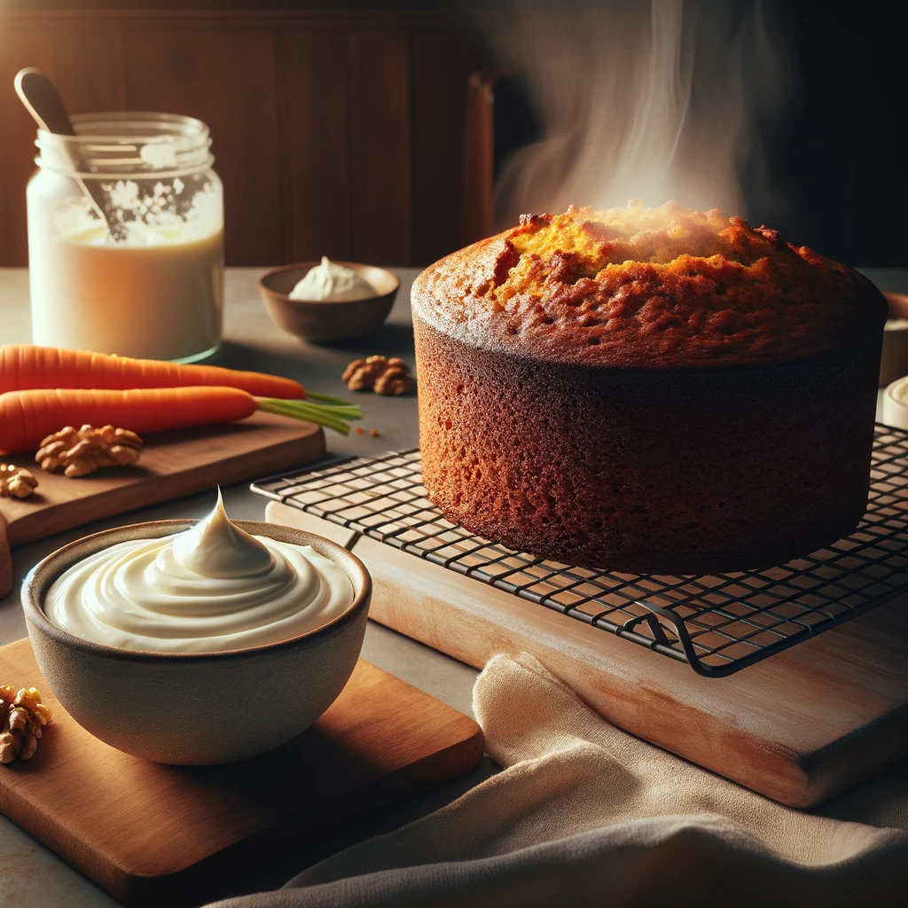
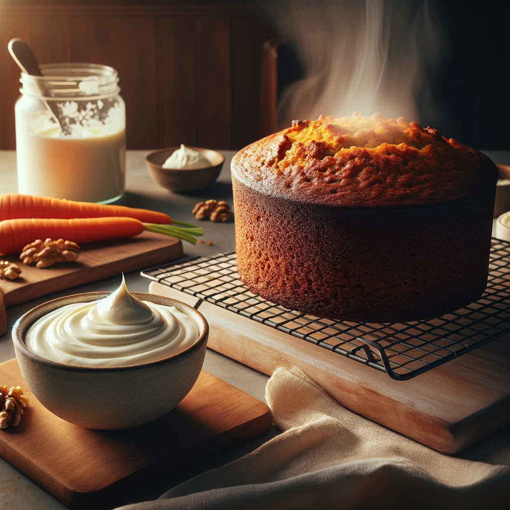

A delicate pastry filled with the sweet nutty goodness of almond paste, dusted with powdered sugar, and baked to a golden perfection.
Ingredients: 1 sheet of puff pastry, 1/2 cup of almond paste, 1/4 cup of powdered sugar, 1 egg (for egg wash).
Instructions:
- Preheat the oven to 375°F
- Roll out the puff pastry and cut it into triangles.
- Spread a thin layer of almond paste on each triangle.
- Roll each triangle from the base to the tip, and curve into crescent shape.
- Brush with egg wash and sprinkle with powdered sugar.
- Lastly, bake for 15-20 minutes until it’s golden brown.


 
